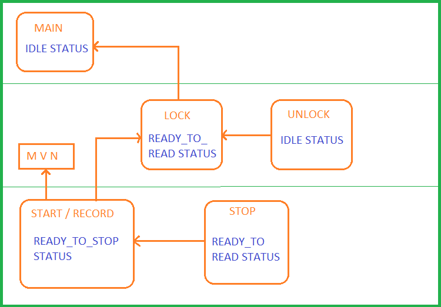

Application: Maya 2012
Language: Python 3.x
Home
Architecture
State Machine
The code functions as a state machine as it operates in different states.
We have thought of 3 states.
- IDLE: the default state.
- READY_TO_READ: invoked after you've locked and brought your locators over to the program by issuing the 'lock()' command.
- READY_TO_STOP: invoked as soon as you're in a started or recording session.
The functions can only be issued when the program is in a certain state.
This is to prevent errors, an end-user shouldn't be able to do 'record()' while there's no locators known in the program.
And it's neat to write programs which act like a state machine, also for readability.
Below a print of the state requirements of the functions and what they return:
Description:
- The lock() command can only be issued in the IDLE status, which is the default state.
- The unlock() command requires the READY_TO_READ status which is set by the lock() command to be performed.
- The start/record() commands require MVN streaming to the correct IP/PORT and the READY_TO_READ status.
- The stop command can only be performed in the READY_TO_STOP status and returns the READY_TO_READ status.
You can see that there are 3 levels of performance, and the 'undo' commands like unlock and stop bring you back to the level above.
